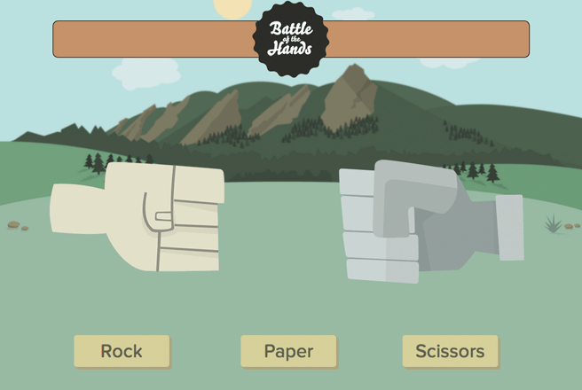

Battle of the Hands
Rock Paper Scissors Game
UX Design
 Launch the AppOver the summer of 2013, I interned as a User Experience Design intern at Viget Labs in Boulder, CO. Part of Viget's internship program required the interns in each of the company's three offices collaborate on a group project.
In the Boulder office, my intern group was made up of myself, a front-end development intern, and a back-end development intern. We chose to build a Rock Paper Scissors game. The project proved to be a very interesting UX design challenge as it was not a typical website.
Main Contributions
- User Stories and User Flow Diagrams
- Wireframes
- Art Direction
User Stories and User Flows
 View User Stories PDF (100 KB)
View User Stories PDF (100 KB)
View User Flows PDF (248 KB)
Our idea was to implement the game in phases, starting with the ability to play against a computer and then adding in the ability to play against other humans. We started by writing up User Stories to figure out what a user would be able to do with our app in each phase we would implement.
To figure out how a user would progress through a game, I began white-boarding user flow diagrams. I then transferred the diagrams into Omnigraffle and then worked to refine them by adding specific annotations and details about each step in the process.
Wireframes
Because of the five phase implementation plan for our project, I found it easiest to create small simplified wireframes for each screen state a user would encounter as they made their way through the game. By doing this, I was also able to list out all of the specific features that would be available within a screen. These became a good reference for both our front-end and back-end devs.
As we moved into the front-end development of the game, I created more detailed wireframes that featured my concepts for various animations. By showing these actions through wireframes, I was able tow work with Samii (FED) to create the animations featured in our game.
Art Direction
Our group, lacking a dedicated design intern, sought help from Viget designer Steve Schoeffel for the visual design of the project. We decided that we wanted to go for a flat cartoonish look and also wanted to include a bit of Boulder in the project (the Flatirons and Chautauqua Park). With our mood boards and after several conversations, Steve was able to create Photoshop comps that I then modified as needed to fit the different screen states necessary for front-end dev.